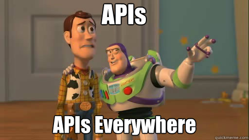

Introducing API design
Posted: June 05, 2013 | More posts about Software Development API Development

What is an API?
API stands for Application Programming Interface. It is like a Graphical User Interface but instead of being used by end users, it is designed to be used by developers. APIs define reusable building blocks that can be used later for building other modular software upon. They can range from simple functions to full-blown libraries.
The primary reason for creating APIs is to hide implementation details while exposing logical interfaces for using them, in order to give us much liberty to change the implementation details later on without affecting any existing clients.
We use them in almost every program we write. For example, FileReader might expose a function called LoadFile() which takes the file's path and is responsible for reading the file and loading it into memory. All the implementation details and the information about the encoding are hidden behind this simple layer of abstraction.
Other famous APIs that most of us use in our coding are:
- Standard Template Library in C++ or its equivalents for other languages
- XNA - A game engine developed by Microsoft
- OpenGL - Library for Computer Graphics
- OpenCV - Library for Computer Vision
- OpenMP and MPI - Libraries for parallelization of code
- Programming Languages; even programming languages can be considered APIs for functionality provided by an operating system or a virtual machine.
- Consequently operating systems are considered low-level programming interfaces for the underlying hardware architecture like interacting with the file system, processes, threads, devices and many other functionalities. E.g. Win32 API - Microsoft's Windows API which is a collection of C functions, constants and data types that enable developers to program applications that run on the Windows Platform.
So as you see, you can be writing an API for your own development, to be used by engineers internally in your organization, or for developers using a service provided by your organization.
Why is an API important?
Using APIs adds more robustness to the code by:
- Hiding implementation details giving you more flexibility to make implementation changes in the future without affecting your users.
- Increasing the longevity of the system as it avoids having tangled code where every part of the system depends on the internal details of other parts of the system.
APIs can be amongst the companies greatest assets, this is because customers invest heavily in learning the API and writing software against it, so the cost to stop using the API or modify it can be devastating.
Because of this tight-coupling between the customers' software and the APIs, we can say that public APIs are forever, and there is one chance to get them right, either they become a liability and inhibit the ability to move forward, or they capture customers and give a great boost to your products.
Why APIs' design require special consideration?
- APIs will undoubtedly be used in ways that we never intended. This must be anticipated through the design process.
- Errors in APIs affect multiple applications.
- Backward compatibility is a priority to prevent clients' code from breaking if we introduce changes to the interfaces.
- APIs can be amongst the companies greatest assets, this is because customers invest heavily in learning the API and writing software against it, so the cost to stop using the API or modify it can be devastating.
Extra miles taken for developing APIs
- To ensure backward compatibility, API reviews are held before releasing a new version of the API. By having one or more senior developers check to make sure that all changes are:
- acceptable
- made for valid reasons
- implemented in the best way to maintain backward compatibility
- Well-written, consistent, and extensive documentation is imperative when writing good APIs. This includes detailed examples of the API usage. Remember all the long nights you spent trying to figure out how to include a library into your code base from a single code example? Well we don't want our clients to suffer the same do we? :D
- Automated testing, to ensure that no changes affect the expected behaviour of the API, and to save you the headache of testing every possible use-case by hand. This type of testing is called regression testing.
Characteristics of a Good API
There are several qualities which ensure that our APIs are well-designed and and that they maintain high usability when considered throughout the process of designing and developing our APIs.
Easy to learn, easy to use and hard to misuse
-
Mapping the problem properly:
A good API should lend itself to be easily used, even without reading the documentation, which can be achieved by properly modelling the problem domain being solved; meaning that it is apparent for the user the relation between the actual entities of the problem and their representations in your API which rely on proper Object-oriented design. -
Consistency:
-
Pick a naming style and stick to it.
-
Consistency with the usage of design patterns,
-
Well documented As Peter Gruenbaum has put it
- Good documentation can increase the likelihood of platform adoption because it means a less-frustrating experience for developers.
- Good documentation reduces the cost of support because developers can find the answers to their questions more easily.
If your API is gaining momentum and is robust enough, it won't be a bad thing to provide some reference material for it. This includes documenting every class, interface, method, constructor, parameter, and exception. The simplest form of reference material would include information about each entity; a short description for it, what it is used for, how to use it and any important remarks that will be of aid to the developers, e.g. exceptions that need to be caught.
- Class: what an instance represents
-
Method: contract between method and its client, this includes preconditions, postconditions, side-effects
-
Fail Fast If it is going to fail, fail fast, gracefully and report errors as soon as possible after they occur. Some errors can be reported in compile-time, so if you are using a static-typed language you can check the types in compile-time and through errors, instead of throwing ambiguous errors in the run-time. Example, matrices depths and types in OpenCV: a method allowed you to use several algorithms to achieve a certain functionality, you send it a matrix to apply the algorithm on and an integer specifying the algorithm you want to use. We got a really strange error in the run-time and we couldn't figure out what was the problem, and after hours of tracing through the library's code we figured out that one of the algorithm had a constraint on the depth of elements operated on in a helper method that is called internally.
So it is always better to fail gracefully early on, than to wreak havoc when the software is online.
Minimally Complete
APIs should be powerful enough to satisfy the requirements. Not more, not less.
- Should Do One Thing and Do it Well - Functionality should be easy to explain If it's hard to name, that's generally a bad sign
- Should be as small as possible but not any smaller, When in doubt leave it out You can always add functionality, but you can never remove it after your clients have depended on it
Easy to evolve
Hide implementation details as they confuse users and and as mentioned earlier, they make it more difficult for you to change the implementation later on. Implementation details include internal exceptions, over-specifying the behaviour of the methods e.g. hash functions
Class Design
Methods
- Maintain consistent parameters ordering especially when overloading methods and don't change the parameter names from one overloaded function to another if they represent the same input.
- Avoid using string parameters and use enumerations that could be investigated instead, especially if your language has mutable strings which could be modified after you've validated them causing you a lot of headache and security vulnerabilities.
- Avoid long parameter lists, especially if they contain identically typed parameters as programmers might shift those parameters by mistake and the compiler will compile successfully, yet causing logical errors. You can solve this either by breaking up the method into smaller methods or creating a wrapper struct/class to hold the parameters.
- String parsing return array of string instead of one string to be parsed
References and Further Reading:
- Martin Reddy's "API Design for C++"
- Joshua Bloch's Google Tech Talk - (Slides) - (Talk Notes)
- Joshua Bloch: Bumper-Sticker API Design
- Peter Gruenbaum's A Coder’s Guide to Writing API Documentation